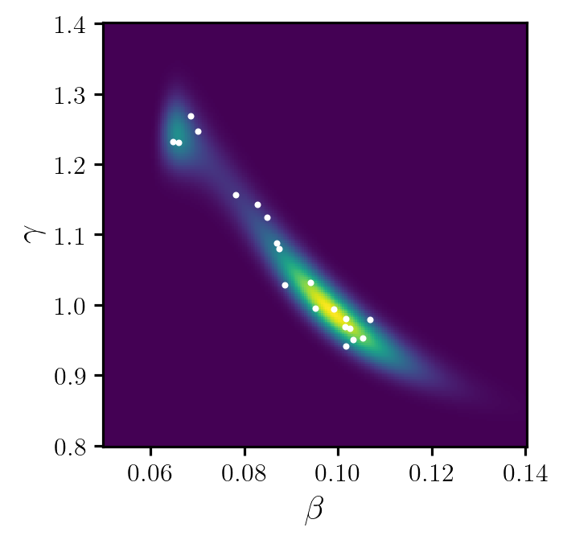

from matplotlib import pyplot as plt
import torch
import deep_tensor as dt
from models import SIRModel
model = SIRModel()SIR Model
Here, we characterise the posterior distribution associated with a susceptible-infectious-recovered (SIR) model. We will consider a similar setup to that described in Cui, Dolgov, and Zahm (2023).
Problem Setup
We consider the SIR model given by the system of ODEs
\[ \frac{\mathrm{d}S(t)}{\mathrm{d}t} = -\beta S I, \quad \frac{\mathrm{d}I(t)}{\mathrm{d}t} = \beta S I - \gamma I, \quad \frac{\mathrm{d}R(t)}{\mathrm{d}t} = \gamma I, \]
where \(S(t)\), \(I(t)\) and \(R(t)\) denote the number of susceptible, infectious and recovered people at time \(t\), and \(\beta\) and \(\gamma\) are unknown parameters. For the sake of simplicity, we assume that \(S(t)\), \(I(t)\) and \(R(t)\) can take non-integer values.
We will assume that the initial conditions for the problem are given by \(S(0) = 99\), \(I(0) = 1\), \(R(0) = 0\), and that we receive four noisy observations of the number of infectious people, at times \(t \in \{1.25, 2.5, 3.75, 5\}\). We will assume that each of these observations is corrupted by additive, independent Gaussian noise with a mean of \(0\) and a standard deviation of \(1\).
Finally, we will choose a uniform prior for \(\beta\) and \(\gamma\); that is, \((\beta, \gamma) \sim \mathcal{U}([0, 2]^{2})\).
Implementation in \(\mathtt{deep\_tensor}\)
To solve this inference problem using \(\mathtt{deep\_tensor}\), we begin by importing the relevant libraries and defining the SIR model.
Next, we generate some synthetic observations. We will assume that the true values of the parameters are \((\beta, \gamma) = (0.1, 1.0)\).
xs_true = torch.tensor([[0.1, 1.0]])
ys_true = model.solve_fwd(xs_true)
noise = torch.randn_like(ys_true)
ys_obs = ys_true + noiseDIRT Construction
There are several objects we must create prior to building a DIRT approximation to the posterior. Here, we describe the key ones. For a full list, see the API reference.
Likelihood and Prior
We first define functions that return the potential function (i.e., the negative logarithm) of the likelihood and the prior density.
Note
The negloglik and neglogpri functions must be able to handle multiple sets of parameters. Each function should accept as input a two-dimensional torch.Tensor, where each row contains a sample, and return a one-dimensional torch.Tensor object containing the negative log-likelihood, or negative log-prior density, evaluated at each sample.
def negloglik(xs: torch.Tensor) -> torch.Tensor:
ys = model.solve_fwd(xs)
return 0.5 * (ys - ys_obs).square().sum(dim=1)
def neglogpri(xs: torch.Tensor) -> torch.Tensor:
neglogpris = torch.full((xs.shape[0],), -torch.tensor(0.25).log())
neglogpris[xs[:, 0] < 0.0] = torch.inf
neglogpris[xs[:, 1] > 2.0] = torch.inf
return neglogprisReference Density and Preconditioner
Next, we specify a product-form reference density. A suitable choice in most cases is the standard Gaussian density.
We must also specify a preconditioner. Recall that the DIRT object provides a coupling between a product-form reference density and an approximation to the target density. A preconditioner can be considered an initial guess as to what this coupling is.
Choosing an suitable preconditioner can reduce the computational expense required to construct the DIRT object significantly. In the context of a Bayesian inverse problem, a suitable choice is a mapping from the reference density to the prior.
bounds = torch.tensor([[0.0, 2.0], [0.0, 2.0]])
reference = dt.GaussianReference()
preconditioner = dt.UniformMapping(bounds, reference)Approximation Bases
Next, we specify the polynomial basis which will be used when approximating the marginal PDFs and CDFs required to define the (inverse) Rosenblatt transport. We can specify a list of bases in each dimension, or a single basis (which will be used in all dimensions).
Here, we use a basis comprised of Legendre polynomials with a maximum degree of 30 in each dimension.
bases = dt.Legendre(order=30)DIRT Object
Now we can construct the DIRT object.
dirt = dt.DIRT(negloglik, neglogpri, preconditioner, bases)[DIRT] Iter: 1 | Cum. Fevals: 2.00e+03 | Cum. Time: 2.54e-01 s | Beta: 0.0001 | ESS: 0.9745
[ALS] Iter | Func Evals | Max Rank | Max Local Error | Mean Local Error | Max Debug Error | Mean Debug Error
[ALS] 1 | 930 | 8 | 1.00000e+00 | 1.00000e+00 | 5.21830e-03 | 1.08928e-03
[ALS] ALS complete. Final TT ranks: 8-1.
[DIRT] Iter: 2 | Cum. Fevals: 5.86e+03 | Cum. Time: 8.80e-01 s | Beta: 0.0037 | ESS: 0.5125 | DHell: 0.0013
[ALS] Iter | Func Evals | Max Rank | Max Local Error | Mean Local Error | Max Debug Error | Mean Debug Error
[ALS] 1 | 620 | 10 | 1.39594e+00 | 1.39594e+00 | 2.18277e-01 | 4.29492e-02
[ALS] ALS complete. Final TT ranks: 10-1.
[DIRT] Iter: 3 | Cum. Fevals: 9.10e+03 | Cum. Time: 1.51e+00 s | Beta: 0.0204 | ESS: 0.5077 | DHell: 0.0274
[ALS] Iter | Func Evals | Max Rank | Max Local Error | Mean Local Error | Max Debug Error | Mean Debug Error
[ALS] 1 | 744 | 12 | 2.50977e-01 | 2.50977e-01 | 4.73993e-02 | 2.83657e-02
[ALS] ALS complete. Final TT ranks: 12-1.
[DIRT] Iter: 4 | Cum. Fevals: 1.26e+04 | Cum. Time: 2.09e+00 s | Beta: 0.0627 | ESS: 0.5412 | DHell: 0.0172
[ALS] Iter | Func Evals | Max Rank | Max Local Error | Mean Local Error | Max Debug Error | Mean Debug Error
[ALS] 1 | 868 | 14 | 3.15719e-01 | 3.15719e-01 | 2.76007e-02 | 1.76338e-02
[ALS] ALS complete. Final TT ranks: 14-1.
[DIRT] Iter: 5 | Cum. Fevals: 1.63e+04 | Cum. Time: 2.53e+00 s | Beta: 0.1303 | ESS: 0.5262 | DHell: 0.0149
[ALS] Iter | Func Evals | Max Rank | Max Local Error | Mean Local Error | Max Debug Error | Mean Debug Error
[ALS] 1 | 992 | 16 | 1.73862e-01 | 1.73862e-01 | 3.09862e-02 | 1.33210e-02
[ALS] ALS complete. Final TT ranks: 16-1.
[DIRT] Iter: 6 | Cum. Fevals: 2.03e+04 | Cum. Time: 3.03e+00 s | Beta: 0.3292 | ESS: 0.5158 | DHell: 0.0157
[ALS] Iter | Func Evals | Max Rank | Max Local Error | Mean Local Error | Max Debug Error | Mean Debug Error
[ALS] 1 | 1116 | 18 | 4.13233e-01 | 4.13233e-01 | 8.46778e-03 | 7.16653e-03
[ALS] ALS complete. Final TT ranks: 18-1.
[DIRT] Iter: 7 | Cum. Fevals: 2.45e+04 | Cum. Time: 3.49e+00 s | Beta: 1.0000 | ESS: 0.5663 | DHell: 0.0114
[ALS] Iter | Func Evals | Max Rank | Max Local Error | Mean Local Error | Max Debug Error | Mean Debug Error
[ALS] 1 | 1023 | 13 | 3.34057e-01 | 3.34057e-01 | 1.14751e-02 | 5.64585e-03
[ALS] ALS complete. Final TT ranks: 13-1.
[DIRT] DIRT construction complete.
[DIRT] • Layers: 7.
[DIRT] • Total function evaluations: 28586.
[DIRT] • Total time: 4.18 s.
[DIRT] • DHell: 0.0093Observe that a set of diagnostic information is printed at each stage of DIRT construction.
Sampling, Marginalisation and Conditioning
We now illustrate how to use the DIRT approximation to carry out a range of tasks.
Sampling
First, it is possible to evaluate the DIRT approximation to the target density pointwise. The below code evaluates the potential function associated with the DIRT approximation to the target density, on a grid of \(\beta\) and \(\gamma\) values.
# Define grid to evaluate potential function on
n_grid = 200
beta_grid = torch.linspace(0.05, 0.14, n_grid)
gamma_grid = torch.linspace(0.80, 1.40, n_grid)
grid = torch.tensor([[b, g] for g in gamma_grid for b in beta_grid])
# Evaluate potential function
potentials_grid = dirt.eval_potential(grid)Figure 1 shows a plot of the DIRT density evaluated on the above grid and compares it to the true posterior. The posterior is very concentrated in comparison to the prior (particularly for parameter \(\beta\)).
Code
fig, axes = plt.subplots(1, 2, figsize=(7, 3.5), sharex=True, sharey=True)
# Compute true density
pdf_true = torch.exp(-(negloglik(grid) + neglogpri(grid)))
pdf_true = pdf_true.reshape(n_grid, n_grid)
# Normalise true density
db = beta_grid[1] - beta_grid[0]
dg = gamma_grid[1] - gamma_grid[0]
pdf_true /= (pdf_true.sum() * db * dg)
# Compute DIRT approximation
pdf_dirt = torch.exp(-potentials_grid)
pdf_dirt = pdf_dirt.reshape(n_grid, n_grid)
axes[0].pcolormesh(beta_grid, gamma_grid, pdf_true)
axes[1].pcolormesh(beta_grid, gamma_grid, pdf_dirt)
axes[0].set_ylabel(r"$\gamma$")
for ax in axes:
ax.set_xlabel(r"$\beta$")
ax.set_box_aspect(1)
plt.show()We can sample from the DIRT density by drawing a set of samples from the reference density and calling the eval_irt method of the DIRT object. Note that the eval_irt method also returns the potential function of the DIRT density evaluated at each sample.
rs = dirt.reference.random(d=dirt.dim, n=20)
samples, potentials = dirt.eval_irt(rs)Figure 2 shows a plot of the samples.
Code
fig, ax = plt.subplots(figsize=(7, 3.5), sharex=True, sharey=True)
ax.pcolormesh(beta_grid, gamma_grid, pdf_dirt)
ax.scatter(*samples.T, c="white", s=4)
ax.set_xlabel(r"$\beta$")
ax.set_ylabel(r"$\gamma$")
ax.set_box_aspect(1)
plt.show()

Marginalisation
We can also sample from and evaluate specific marginal densities. In the case of a multi-layered DIRT, we can evaluate the (normalised) DIRT approximation to the marginal density of the first \(k\) variables, where \(1 \leq k \leq d\) (where \(d\) denotes the dimension of the target random variable).
The below code generates a set of samples from the marginal density of parameter \(\beta\), and evaluates the marginal density on a grid of \(\beta\) values.
# Generate marginal samples of parameter beta
rs_beta = dirt.reference.random(d=1, n=1000)
samples_beta, potentials_beta = dirt.eval_irt(rs_beta, subset="first")
# Evaluate marginal potential on the grid of beta values defined previously
potentials_grid = dirt.eval_potential(beta_grid[:, None], subset="first")Figure 3 plots the samples of \(\beta\), and provides a comparison between the DIRT approximation to the density and the true density.
Code
pdf_true_marg = pdf_true.sum(dim=0) * dg
pdf_dirt_marg = torch.exp(-potentials_grid)
fig, ax = plt.subplots(figsize=(6.5, 3.5))
ax.plot(beta_grid, pdf_true_marg, c="k", label=r"True density", zorder=2)
ax.plot(beta_grid, pdf_dirt_marg, c="tab:green", ls="--", label=r"DIRT density", zorder=3)
ax.hist(samples_beta, color="tab:green", density=True, alpha=0.5, zorder=1, label="Samples")
ax.set_xlabel(r"$\beta$")
ax.set_ylabel(r"$f(\beta)$")
ax.set_box_aspect(1)
ax.legend(loc="center left", bbox_to_anchor=(1, 0.5))
add_arrows(ax)
plt.show()Conditioning
Finally, we can sample from and evaluate specific conditional densities. In the case of a multi-layered DIRT, we can evaluate the (normalised) DIRT approximation to the conditional density of the final \((d-k)\) variables conditioned on the first \(k\) variables, where \(1 \leq k < d\) (where \(d\) denotes the dimension of the target random variable).
The below code generates a set of samples from the density of \(\gamma\) conditioned on a value of \(\beta=0.1\), and evaluates the conditional density on a grid of \(\gamma\) values.
# Define beta value to condition on
beta_cond = torch.tensor([[0.10]])
# Generate conditional samples of gamma
rs_cond = dirt.reference.random(d=1, n=1000)
samples_gamma, potentials_gamma = dirt.eval_cirt(beta_cond, rs_cond, subset="first")
# Evaluate conditional potential on a grid of gamma values
gamma_grid = torch.linspace(0.9, 1.1, 200)[:, None]
potentials_grid = dirt.eval_potential_cond(beta_cond, gamma_grid, subset="first")Figure 4 plots the conditional samples of \(\gamma\), and provides a comparison between the DIRT approximation to the conditional density and the true density.
Code
beta_cond = beta_cond.repeat(gamma_grid.shape[0], 1)
grid_cond = torch.hstack((beta_cond, gamma_grid))
dg = gamma_grid[1] - gamma_grid[0]
# Evaluate true conditional density
pdf_true_cond = torch.exp(-(negloglik(grid_cond) + neglogpri(grid_cond))).flatten()
pdf_dirt_cond = torch.exp(-potentials_grid)
# Normalise true conditional density
pdf_true_cond /= (pdf_true_cond.sum() * dg)
fig, ax = plt.subplots(figsize=(6.5, 3.5))
ax.plot(gamma_grid, pdf_true_cond, c="k", label=r"True density", zorder=3)
ax.plot(gamma_grid, pdf_dirt_cond, c="tab:purple", ls="--", label=r"DIRT density", zorder=3)
ax.hist(samples_gamma, color="tab:purple", density=True, alpha=0.5, zorder=1, label="Samples")
ax.set_xlabel(r"$\gamma$")
ax.set_ylabel(r"$f(\gamma|\beta=0.1)$")
ax.set_box_aspect(1)
ax.legend(loc="center left", bbox_to_anchor=(1, 0.5))
add_arrows(ax)
plt.show()References
Cui, Tiangang, Sergey Dolgov, and Olivier Zahm. 2023. “Scalable Conditional Deep Inverse Rosenblatt Transports Using Tensor Trains and Gradient-Based Dimension Reduction.” Journal of Computational Physics 485: 112103. https://doi.org/10.1016/j.jcp.2023.112103.